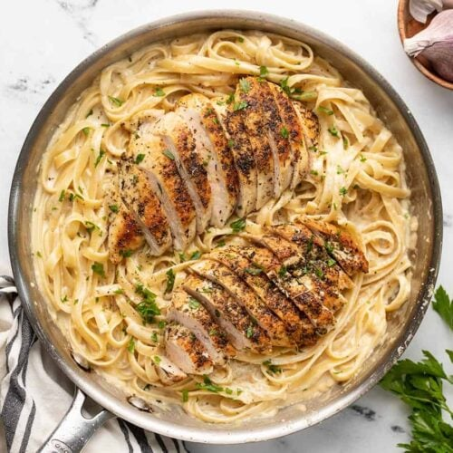

hearty meet souse 1:Heat the oil in a medium Dutch oven or pot over medium heat. Add the red pepper flakes and stir for 15 seconds. Add the onion and carrot and cook, stirring occasionally, until the onion is golden brown, 10 to 15 minutes. Stir in the garlic and cook until soft, about 1 minute. Stir in the tomato paste and cook until brick red, about 1 minute. Add the crushed tomatoes with their juices, the sugar, 1 teaspoon of salt and a few grinds of pepper. Bring to a simmer. Partially cover the pot and continue to simmer the sauce for 15 minutes, adjusting the heat as needed to maintain a simmer. Meanwhile, heat a large nonstick skillet over medium-high heat. Add the beef, oregano, rosemary and thyme. Sprinkle with salt and pepper. Cook the meat, breaking up with a wooden spoon, until it browns, about 5 minutes. Stir the meat into the sauce and continue to simmer, partially covered, stirring occasionally, until thickened and the flavors have blended, about 1 hour. Add a splash of water if the sauce becomes too thick. Stir the Parmesan into the sauce and adjust the seasoning with additional salt and pepper. Serve over hot pasta with extra cheese for topping.
1:creamy mushroom ristto Step 1 Heat the stock and 1 cup of water in a medium saucepan over high heat until almost boiling. Remove from heat and cover to keep warm. Step 2 Heat 1 tablespoon of the oil in a large saucepan over medium-high heat. Cook the onion, stirring, for 5 mins or until tender. Stir in the rice until well coated. Stir in the wine and cook for 1 min or until wine has evaporated. Add 1 ladleful of stock mixture and gently stir until stock is absorbed. Repeat with the remaining stock mixture until the rice is tender with just a slight bite. TASTE.COM.AU01:06 How to prepare onions UP NEXT How to chop and slice onions Step 3 Meanwhile, heat the remaining oil in a large frying pan over medium-high heat. Cook the garlic, stirring, for 3-4 mins or until golden and crisp. Use a slotted spoon to transfer to a plate. Increase heat to high. In batches cook the mushrooms in the butter, stirring, for 5 mins or until golden and tender. Transfer to another plate. Return one-quarter of the mushrooms to the pan. Add the garlic and parsley. Season and toss to combine. Reserve to garnish the risotto. Step 4 Stir the plain mushrooms and parmesan into the risotto. Set aside, covered, for 2 mins to melt. Divide among plates and top with reserved garlic mushrooms. Season with pepper. Reviews
1:good frickin paprika chicken Directions Whisk together yogurt, garlic, 3 tablespoons paprika, 2 tablespoons olive oil, 1 tablespoon hot chile paste, and cayenne pepper in a large bowl. Mix in chicken pieces and toss to evenly coat. Cover the bowl with plastic wrap and marinate in the refrigerator for 3 hours. Preheat an outdoor grill for medium-high heat, and lightly oil the grate. Remove chicken from the bag and transfer to a plate or baking sheet lined with paper towels. Pat chicken pieces dry with more paper towels. Season with salt. Combine 1/4 cup olive oil, sherry vinegar, ketchup, 1/8 teaspoon hot chile paste, pinch paprika, salt, and pepper in a small bowl. Set aside. Grill chicken, skin-side down, on the preheated grill for 4 minutes with grill lid closed. Turn chicken and grill with lid closed until well-browned and meat is no longer pink in the center, about 6 minutes. An instant-read thermometer inserted into the thickest part of the thigh should read 180 degrees F (82 degrees C). Spoon sherry vinegar mixture over cooked chicken and serve.
1:sushi step 1 Place a rack closest to broiler. Heat broiler to high. In a medium bowl, combine mayonnaise, sriracha, oil (if using), and 4 teaspoons soy sauce. Step 2 Place salmon on a large foil-lined baking sheet; season all over with 1 teaspoon salt. Spoon 1 tablespoon spicy mayo on each fillet and rub all over. Broil salmon, watching closely, until tops start to brown and blister, 9 to 11 minutes. Step 3 Meanwhile, in a large bowl, toss rice, furikake, 1 tablespoon vinegar, 1 teaspoon sugar, and remaining 2 teaspoons soy sauce until combined. In a small bowl, toss cabbage, 1/4 teaspoon salt, and remaining 2 tablespoons vinegar and 1/4 teaspoon sugar until combined. Step 4 Transfer salmon to another medium bowl and add 2 tablespoons spicy mayo. Using a fork, break salmon into small pieces and toss until coated. Step 5 On a work surface, arrange a sheet of nori with a point facing you. Spoon 1/3 cup rice mixture into the center. Using wet fingers, pat rice into a square. Top with 1/4 cup salmon mixture, spreading over rice. Layer with 4 slices cucumber, 2 tablespoons cabbage mixture, 1 tablespoon grated carrot, 2 slices avocado, and 2 tablespoons spicy mayo. Fold top corner of sheet down over the center. Repeat with bottom, left, and right corners to make a square pouch, enclosing fillings. Tightly wrap with plastic wrap. Repeat with remaining sheets and filling. Let sit 10 minutes. Step 6 Unwrap sushi sandwich and slice in half. Serve with remaining spicy mayo alongside.
1:checken alfradoo  Season both sides of the chicken breast with Italian seasoning and a pinch of salt. Heat a large skillet over medium. Once hot, add the cooking oil and swirl to coat the surface. Add the chicken to the skillet and cook for about 7-8 minutes on each side, or until browned on the outside and cooked through. Remove the chicken to a clean plate and turn the heat under the skillet down to medium-low. Add the butter and minced garlic to the skillet. Stir and cook the garlic in the melted butter for about two minutes, dissolving the browned bits from the bottom of the skillet as you stir. Add the heavy cream and whisk to combine, dissolving any remaining browned bits. Allow the cream to come up to a simmer. While waiting for the cream to simmer, bring a pot of water to a boil for the fettuccine. Once boiling, add the pasta and continue to boil until tender (about 7 minutes). Reserve about ½ cup of the starchy cooking water just before draining the pasta. Once the cream is simmering, add the grated Parmesan to the skillet. Continue to whisk and stir until the Parmesan has melted into the sauce and the sauce has begun to simmer. Simmer the sauce for a few minutes, or until it becomes slightly thicker. Add salt and pepper to the sauce to taste. Add the drained pasta to the skillet with the creamy sauce and toss to combine. If the sauce becomes too thick, add a couple of tablespoons of the reserved pasta water and toss to combine with the sauce. Slice the cooked chicken breasts and serve it atop the creamy pasta. Garnish with chopped parsley, if desired.